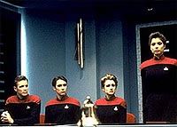
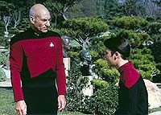
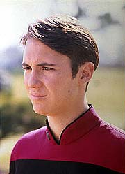
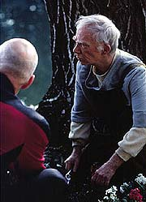
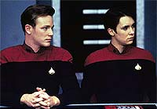

|
MANCHETE
DO EPISDIO
Dilema
militar mostra o potencial de
histria ambientada na Academia
Episdio
anterior | Prximo
episdio
Sinopse:
Data Estelar: 45703.9.
A caminho da Academia da Frota Estelar, na Terra, onde Picard deve
fazer o discurso de formatura deste ano, a Enterprise informada
de um terrvel acidente de vo envolvendo Wesley Crusher e sua
esquadra. Todas as cinco naves envolvidas foram destrudas, mas
quatro dos cinco cadetes conseguiram escapar em segurana, fazendo
um transporte de emergncia. O quinto membro da equipe, entretanto,
Joshua Albert, foi morto instantaneamente.
 Picard,
a dra. Crusher e os demais pais dos cadetes envolvidos acompanham
quando a almirante Brand, a superintendente da Academia, comea uma
investigao, interrogando os quatro cadetes sobreviventes sobre o
vo fatal. Quando a almirante encontra discrepncias entre seus
depoimentos e o plano de vo previamente reportado, o lder da
esquadra, Nicholas Locarno, decide se manifestar. Ele relutantemente
diz ao painel de investigao que Albert entrou em pnico e
perdeu o controle de sua nave durante a manobra, o que teria causado
o acidente. O pai de Albert, um oficial da Frota Estelar, fica
especialmente afetado pelo depoimento.
Como Wesley tinha contato direto com a tripulao da Enterprise, a
almirante Brand permitiu que Picard e sua equipe fizessem sua prpria
investigao do acidente. Enquanto isso, Wesley encontra Locarno e
os outros membros do Esquadro Nova para discutir a audincia. Os
trs cadetes esto claramente incomodados com a atitude de seu lder
de colocar a culpa em Albert quando na verdade no era sua culpa.
Locarno tenta convenc-los de que eles no esto mentindo ao
omitir detalhes cruciais que explicariam o que realmente aconteceu,
e de que eles precisam continuar com seu plano para salvar suas
carreiras. Enfatizando a importncia do trabalho de equipe, ele faz
com que seu esquadro se una novamente. Mais tarde, quando a audincia
retomada, Wesley questionado sobre os dados remanescentes de
seu gravador de vo. Ele e seus colegas ficam chocados quando o
painel apresenta evidncias, obtidas de um satlite de observao,
que claramente contradizem o testemunho de Wesley. Entretanto,
apesar de ter sido pego em uma mentira, o rapaz se recusa a
explicar.
 Abalado
pelo que est acontecendo, Wesley sutilmente indica a Beverly que
ele est mentindo. Ela compartilha seus sentimentos com Picard, e
os dois se unem a Geordi e Data para tentar chegar a uma concluso.
Juntos, eles usam todos os dados recuperados e concluem que, em vez
da formao que diziam estar usando, Wesley e seus colegas estavam
trabalhando em uma manobra extremamente perigosa, proibida h cem
anos pela Frota Estelar.
Picard confronta Wesley e diz ao rapaz que ele e sua tripulao
sabem o que aconteceu. Eles sabem que o esquadro de Wes estava
tentando uma manobra espetacular para realizar durante a cerimnia
de fim de ano de Academia da Frota. Caso eles tivessem sido
bem-sucedidos, Locarno iria se graduar como uma lenda viva.
Infelizmente, sua falha custou a vida de Albert. Picard diz a Wesley
que se ele no disser a verdade, o prprio capito o far. esley
imediatamente se encontra com o resto de sua equipe, mas Locarno
novamente os convence a ficarem unidos, lembrando que Picard no
tem prova concreta. Na audincia, entretanto, Wesley diz a verdade,
incapaz de permitir que o pai de Albert saia acreditando que seu
filho era um covarde. Locarno assume toda a culpa e expulso, e o
resto do esquadro sai com uma punio mais leve --o cancelamento
de seu ano escolar.
Comentrios:
Talvez uma srie
inteira ambientada na Academia da Frota Estelar realmente no
rendesse, mas "The First Duty" prova que ao menos
um ou dois episdios feitos por l podem dar muito pano para a
manga. A histria bastante simples, e no envolve muita reflexo
filosfica. A discusso se estabelece muito mais no plano moral, e
interessante perceber que trata-se realmente de um dilema, e no
de uma falsa problemtica. de fato muito delicado escolher entre
seus amigos e a verdade. Tanto complicado que, nos bastidores de Jornada,
a mesma discusso que Locarno e Wesley tm acabou acontecendo.
 Ron
Moore, um dos dois roteiristas do segmento, achava que Wesley
deveria acabar protegendo seus amigos. Michael Piller, ento chefe
da equipe de roteiristas, achava que o dever final de Wesley seria
sempre para com a verdade. Os dois discutiram, discutiram,
discutiram, mas quando chegou a hora de decidir como concluir a histria,
Piller optou por exercer sua autoridade de chefia e ordenou Moore e
Shankar a conclurem a histria com a verso que vemos na tela.
Se isso no suficiente para mostrar o grau de dificuldade desse
dilema, ento certamente a posio de Nick Locarno . Em princpio,
o telespectador tende a achar que o lder do esquadro um mero
aproveitador, mas quando ele assume toda a culpa, mostra que seu
discurso no era nem um pouco falso. Trata-se apenas de uma
filosofia diferente.
Essa atitude traz a redeno para o personagem, mostrando-o com um
vis muito mais imparcial do que costumamos ver por a. Ponto para
o roteiro. Alis, o roteiro o grande forte deste segmento. Sem
muita ao ou grandes jogos de cmera, o episdio se sustenta
totalmente nos dilogos. De certa forma, em termos de evoluo,
ele quase um negativo do episdio anterior, "Cause
and Effect", esse sim muito mais dependente da execuo.
Apesar de o roteiro j dar uma tremenda mo, os atores vo muito
bem. Talvez a nica decepo seja o capito Vulcano, com aquele
ar de falso esperto. Ao contrrio de Spock, o cone Vulcano por
excelncia, Sotelk no consegue convencer a audincia de que ele
de fato representa o melhor da sagacidade de sua espcie. Mas ele
tenta, o que acaba ficando pouco convincente.
Os cadetes todos tm atuaes brilhantes, inclusive Wesley
Crusher, que mostra que, quando bem escrito, pode ser um bom
personagem. Wil Wheaton tambm tem a chance de mostrar um pouco de
seu talento, coisa rarssima na srie.
 Outro
momento absolutamente especial e vencedor o reencontro de Picard
com Boothby, o jardineiro da Academia. Embora acabemos aprendendo
muito pouco sobre o passado do capito com aquele senhor, a qumica
entre os dois grandes atores, Stewart e o inesquecvel e saudoso
Ray Walston, inacreditvel. Quase to impressionante quanto os
toques de continuidade dados ao longo do episdio, como a fama de
encrenqueiro do cadete Picard e sua apreciao pelo atletismo.
Do ponto de vista de execuo, temos algumas coisas interessantes.
As paisagens e cenrios da Academia esto bastante desenvoltos,
muito melhores que os do Comando da Frota, vistos em "Conspiracy",
do primeiro ano. curioso notar que, em pleno sculo 24, a porta
do alojamento de Wesley Crusher tenha uma maaneta! Opo esttica
ou falha de produo?
Em termos de efeitos especiais, a sequncia que talvez impressione
mais seja a do gravador de vo da nave de Wesley. Embora no seja
muito realista, um uso impressionante dado a grficos gerados
por computador (CGI), algo que ainda no estava nem perto de
atingir o grau de realismo que existe hoje. Mesmo assim, foi uma
inovao interessante e que no chegou a comprometer o episdio.
 Uma
trama bem amarrada, sem falhas de continuidade, drama de primeira
qualidade, enfoque bem feito nos personagens e dilogos
bem-escritos fazem deste episdio um dos melhores da temporada e
possivelmente de toda a srie.
Citaes:
Riker - "When I
was at the Academy, we had a Vulcan superintendent who would
memorize the personnel files of every single cadet. Knew everything
about them. Just like having your parents around all the time."
("Quando eu estava na Academia, eu tinha um superintendente
Vulcano que memorizou todos os arquivos pessoais de cada cadete.
Sabia tudo sobre eles. Era como ter seus pais por perto o tempo
todo.")
Picard - "My superintendent was a Betazoid, full telepath.
When he sent for you to his office he didn't have to ask what you've
done."
("Meu superintendente era um Betazide, telepata total. Quando
ele mandava voc a seu escritrio no precisava perguntar o que
voc havia feito.")
Riker - "You got called to the superintendent's office? That's
a story I would like to hear."
("Voc foi chamado ao escritrio do superintendente? Essa
uma histria que eu gostaria de ouvir.")
Trivia:
 Wesley Crusher est de volta nesse que considerado o melhor episdio
com o personagem, alm de um dos melhores de toda a Nova Gerao.
Wesley Crusher est de volta nesse que considerado o melhor episdio
com o personagem, alm de um dos melhores de toda a Nova Gerao.
O
ator Ray Walston, falecido em 2001, conhecido do pblico como o
personagem principal da srie de 1960 "Meu Marciano
Favorito". Neste episdio o veterano ator interpreta Boothby,
o jardineiro da Academia da Frota Estelar em So Francisco. Boothby
j havia sido citado em dois episdios da Nova Gerao, "Final
Mission" e "The Game",
mas nunca havia aparecido at este episdio.
O
primeiro capito Vulcano da Nova Gerao tambm aparece
aqui. Satelk, interpretado por Richard Fancy.
Ro
Laren no a nica Bajoriana na Frota Estelar. Em "The
First Duty" conhecemos a cadete Sito Jaxa, outra Bajoriana
tentando a sorte na carreira de oficial da Frota. Sito voltar a
aparecer em um excelente episdio da stima temporada, "Lower
Decks", onde ter grande importncia para a trama.
Robert Duncan McNeill, que mais tarde seria o tenente Tom Paris, de Voyager,
participa deste episdio como o cadete de primeira classe Nicholas
Locarno. Voc vai reparar muitas semelhanas entre este personagem
e Paris. Na verdade, os produtores so no aproveitaram Nick
Locarno como piloto da USS Voyager pois teriam os mesmos problemas
de direitos autorais que tiveram ao tentar introduzir T'Pau em Enterprise.
Nos dois casos, foi prefervel simplesmente trocar o nome do
personagem a pagar royalties aos criadores originais.
Repare no logotipo da bandeira da Academia da Frota Estelar. L est
escrito "San Francisco/MMCLXI", ou seja, So
Francisco/2161, o ano em que a Federao foi fundada. No logotipo
pode ser encontrada tambm a frase em latim "Ex astra,
scientia", ou seja, "Das estrelas, conhecimento". A
frase foi baseada no slogan presente no logotipo da misso da
Apollo 13 que dizia "Ex luna, scientia" ("Da Lua,
conhecimento").
"The
First Duty" to eloquente que chegou a ser exibido vrias
vezes aos cadetes da Academia do Exrcito dos EUA.
Ficha
tcnica:
Escrito por Ronald D. Moore
& Naren Shankar
Direo de Paul Lynch
Exibido em 30/03/1992
Produo: 119
Elenco:
Patrick Stewart como
Jean-Luc Picard
Jonathan Frakes como William Thomas Riker
Brent Spiner como Data
LeVar Burton como Geordi La Forge
Michael Dorn como Worf
Gates McFadden como Beverly Crusher
Marina Sirtis como Deanna Troi
Elenco convidado:
Ray Walston como
Boothby
Robert Duncan McNeill como cadete de 1 classe Nick Locarno
Ed Lauter como tenente-comandante Albert
Richard Fancy como capito Vulcano Satelk
Jacqueline Brooks como almirante superintendente Brand
Wil Wheaton como cadete de 3 classe Wesley Crusher
Walker Brandt como cadete de 2 classe Jean Hajar
Shannon Fill como cadete de 2 classe Sito Jaxa
Richard Rothenberg como um cadete
Episdio
anterior | Prximo
episdio
|